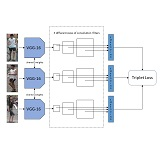
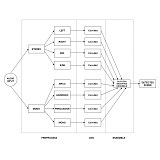

|
Hello there! I am pursuing my bachelors in Electronics & Telecommunication Engineering at Jadavpur University and is currently in my final (fourth) year of studies. I am doing by bachelor's thesis under the supervision of Prof. Ananda Shankar Chowdhury. My research interests lie at the intersection of computer vision and deep learning with a particular heed to their applications in robotics and surveillance systems. Lately, I am also enthusiastic about applying reinforcement learning for intelligent control in robots. Feel free to contact me over e-mail if you are interested in my works and want to learn more them. |
{kind=link}
|
|

|
Arindam Sikdar, Dibyadip Chatterjee, Arpan Bhowmik, Ananda S. Chowdhury ICIP, 2020 (under review) |

|
Dibyadip Chatterjee, Charu Arora, Saurajit Chakraborty, Sanjoy Kumar Saha IEEE CALCON , 2020 (Oral Presentation) Contextual information across a close neighbourhood of consecutive frames can be captured to recognize different gestures that consitutes an activity. Proposed spatio-temporal descriptors are based on HOG and HOF features further augmented with contextual information. |

|
Dibyadip Chatterjee, Harsh Jaiswal, Adarsh Honakamble, Konchady Gautam Shenoy IEEE ANTS , 2019 (Oral Presentation) Joint optimization of a communication channel using deep autoencoder based methods result in better performance than traditional block-wise optimization. The proposed architectural design is extremely robust that supports various learning strategies (cooperative and adversarial) when multiple users try to communicate over a shared channel. |
|
Here is a summary of some of my major projects during my undergraduate studies. |
|  |
Dibyadip Chatterjee 2018 Instances of a person across cameras may vary in scale for re-identification purposes. In such scenarios the backbone network used for feature extraction should be allowed to generate close image embeddings irrespective of the difference in scale between any positive pairs. Different sizes of convolutional filters are thus used to get different FOVs for each convolution operation. |
|  |
Dibyadip Chatterjee, Prithwijit Guha IIT Guwahati, 2018 code / page MEL and MFCC features extracted from stereo audio samples taken in outdoor environments have independent success regions in the instance space. A new ensemble learning technique where classifier weights are dependent on the input instances is used to boost the overall performance. |
|
|
 |
Samsung Research Institute, Bangalore (SRI-B)
Research Intern, May 2019 - July 2019 |
 |
Indian Institute of Technology, Guwahati (IIT-G)
Research Intern, May 2018 - July 2018 |
|
Design and source code from Jon Barron's website |